前言
libevent是当前一个非常知名的跨平台网络库，学习并研究它，可以让我们理解一个优秀的网络库是如何设计的。为此，我近期花了几天时间，过了一遍libevent的基础数据结构和基本运行机制。虽然libevent库整体并不是很大，但是短短几天内要彻底掌握所有的细节，还是有相当的难度，因此这里，我只阐述libevent最核心的运作机制。本文研究的libevent的版本是libevent-2.1.12-stable。
为了能够进一步探索libevent的核心机理，我特意写了一个使用libevent的简单多线程使用范例，这个例子，服务器会启动一条main thread和4条worker thread，main thread负责监听和接收新的连接请求，以及已连接的客户端的数据包的收发工作。在收到客户端的数据包后，main thread会向4条worker线程广播该客户端的消息，4条worker线程收到数据包之后，会添加一些信息后，发回给main thread，由main thread转发给客户端。这个过程中，如何高效使用IO多路复用器，借此来处理网络数据包，以及线程安全等，基本是交给libevent去处理。本文，也为围绕这个例子来展开论述，读者可以在这个链接处下载源代码。
准备工作
在开始论述之前，我希望读者对IO多路复用器（尤其是epoll），以及对reactor和proactor模式有个大致的理解。对于这两个方面，网络上已经有大量的文章了，我自己也写过很多，如果读者想要了解这两项内容，可以点击下面两个链接查阅：
- 对epoll的讨论，我在skynet网络机制一文中的【epoll机制与file descriptor简介】小节中，有比较详细的论述。
- 对于reactor和proactor的讨论，我在C#服务端框架设计与实现一文中，也有详细的论述
如果读者对上面两个内容都非常熟悉，那么可以继续下面的内容了。
libevent简介
libevent是什么？它解决了什么问题？我们为什么使用它？面对灵魂拷问，我们这个小结就是要来一一解答这些问题的。首先，我们回到第一个问题，libevent是什么？本质上来说，它是一个网络库，能够帮我们处理大量的网络编程细节，降低我们的网络编程门槛，并且它具备良好的跨平台能力。使用者只需要向它注册一些事件，它就会在合适的时机（比如可读、可写或定时事件触发时）调用我们对应的注册函数。官网对自己的介绍也是很简单：
The libevent API provides a mechanism to execute a callback function when a specific event occurs on a file descriptor or after a timeout has been reached. Furthermore, libevent also support callbacks due to signals or regular timeouts.
虽然我研究libevent的时间并不长，但是我曾经花了大量的时间研究其他服务器框架的网络库和网络原理基础知识，自己也在设计项目中使用的C#服务端框架SparkServer的时候，也自己写过一个proactor模式的网络库，因此，在阅读libevent源码的时候，并没有感到太吃力。本文也是我自己对这几天源码阅读内容的集中梳理和总结，同时也希望能够帮助大家，另外本人水平有限，如有不当之处，希望大家能够积极指出，大家可以通过加这个q群找到我185017593。
一切的源头–event_base结构
要理解libevent的运作机制，首先要理解一个最核心，最重要的数据结构:event_base结构。在使用libevent之前，就必须先创建这个结构，在源码中，event_base结构体的代码和注释加起来，就已经上百行了，非常庞大，这里我并不打算把这个数据结构的所有代码都如数贴出，因为把所有细节暴露在读者面前，只会打击大家探索libevent的热情，因此，这里我借助几张图，来阐述几个最核心、最重要的结构。其他的内容，等读者梳理清楚libevent最核心的结构和主流程之后，再自己深入源码查阅细节。我尽量避免一张图就展示所有的细节，而是分多张图来显示，这些图会展示关键部分，以及他们之间的联系。
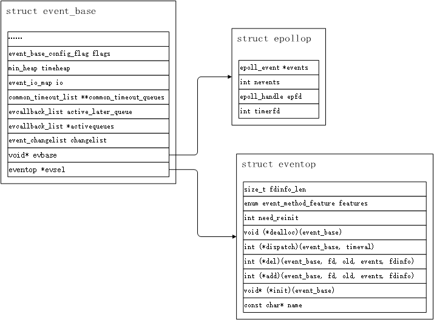图1
我通过图1展示了event_base中，我认为的最重要的几个部分，首先我们要观察的是evbase和evsel两个字段，他们可以说的上是核心中的核心，为什么这么说呢？因为libevent支持epoll、select、poll、kqueue、evport、devpoll等多种IO复用器，这些不同的IO多路复用器分别有自己的数据结构要使用，如何统一他们是个关键问题。libevent通过一个void* 型实例evbase来存储这些一切类型结构的指针。evsel则代表了，所有IO复用器在使用过程中的几种相似的操作。由于我们使用libevent绝大多数情景，是构建linux上运行的服务器，因此这里就以epoll为例。我们可以看到，图1中，evbase所指向的结构，是一个叫做epollop的结构，它包含了
- epoll检测到有事件触发时，填写能够描述事件信息的epoll_event* 列表
- 表示epoll_event列表中，有多少个有效事件的nevents变量
- 表示epoll实例本身的epfd
- 还有一个用来处理时间的可以选择使用的timerfd
另一个字段，evsel则指向了一个叫做eventop的结构，现在对它里面的关键字段，分别进行论述：
- name:eventop结构的名称，在epoll中，有两种，一种是”epoll”，还有一种则是”epoll (with changelist)“。前者是不使用changelist时的情况，后者则是使用，我们会在后面讨论changelist。
- init函数指针：用于创建evbase实例的函数，在event_base实例初始化阶段，就要调用这个函数进行创建，在epoll的使用情景中，这个函数会创建一个上文提到的epollop结构实例。
- add函数指针：我们创建的所有的event，最后都要塞到event_io_map类型变量–io之中(event_base结构中的一个成员，等下会介绍到)，而将event塞入的同时，要将与之相关联的fd，添加到IO多路复用器中，进行事件监听，而这个操作，就是通过evsel->add函数来执行（比如将fd添加到epoll的监听列表中）。这样fd就能够借助IO多路复用器感知事件，并且在触发时根据它找回对应的，与之关联的事件，并且激活，尔后执行它。
- del函数指针：我们的event，从io这个event_io_map类型的结构中删除时，也要将与event关联的fd，从IO多路复用器监听列表中删除，这个del函数就是干这件事情的。
- dispatch函数指针：这个函数在event_base_loop中调用，主要作用就是调用select、epoll_wait、poll等函数，在没有IO事件时，将线程投入睡眠，在有IO事件到达，或定时事件触发时，唤醒线程，并且将有IO事件的fd相关的event放入激活列表中。在后续的流程梳理过程中，读者将彻底理解这个函数的运作流程，目前只是做概述。
- dealloc函数指针：在event_base_free函数里调用，也就是在销毁event_base实例时，要顺带将evbase实例释放，释放之前要做一些反注册操作，比如将epoll的事件列表，以及实例销毁等等。
- need_reinit：是否需要重新初始化的变量标记，一般在fork一个进程时，要使用，我们的使用案例中很少用到fork，这里不深入讨论。在epoll的使用范例中，它的值是1。
feature：我前面说过，libevent整合了多种IO多路复用技术的使用，这些不同的IO多路复用器，能够支持的特性也是不同的，这些他们本身就支持的特性就被记录在feature字段中，比如，我们选择select（在windows平台下使用libevent，默认情况下会自动关联到select），这个参数的值就为0（既不支持任何特性），如果我们选择epoll，那么它的值为EV_FEATURE_ET|EV_FEATURE_O1|EV_FEATURE_EARLY_CLOSE，它表示什么意思呢？意味着epoll能够支持如下特性：
- EV_FEATURE_ET：支持边缘触发机制
- EV_FEATURE_O1：当有IO事件触发时，epoll获取有效事件的效率接近O(1)（epoll_wait唤醒时，event列表中，小于nevent的事件均是有效事件），而select的效率是O(n)，每个都要测试
- EV_FEATURE_EARLY_CLOSE：epoll支持RDHUB事件，即对端关闭连接时，能够被epoll_wait感知
我们在创建event_base的时候，可以填充一些参数，传入创建函数event_base_new_with_config，这样它就会根据我们希望能够支持的特性（与feature字段进行对比），去选择对应的IO多路复用器，如果不填充，则交给系统默认选择，一般而言，linux平台下默认回选择epoll，windows平台则是使用select。
fdinfo_len：创建event_map_entry结构实例时，为其开辟的额外的内存空间，使用epoll时，如果使用changelist，它的值为4，用于存储特殊的信息，不使用changelist时，它的值为0。本文主要讨论的epoll不使用changelist的情况，因此这个字段没什么用途，可以忽略。
以下内容，读者可以选读：
前面，我们已经完成了event_base结构中，evbase和evsel两个结构的一些细节，接下来来看一下其他字段，首先是changelist，我们前面讨论过evsel->add函数的作用了，changelist的作用就是，调用evsel->add函数时，不直接将fd添加到IO多路复用器的监听列表中，而是先塞入changelist列表，再在合适的时机（evsel->dispatch函数调用时），将他们一起添加到epoll实例中。对应的删除事件时，我们会调用evsel->del函数，这里也不会直接将关联的fd从epoll监听事件中清除，而是塞入changelist列表，下次调用evsel->dispatch函数时执行。这样做的目的是啥？个人认为在多线程的情况下，可能可以提升一些性能。我们在调用event_add的时候，会将event添加到io中，此时会调用evsel->add函数，在多线程的情况下，event_add函数内部会加锁，此时其他线程也要调用event_add时，就会挂起，也就是先申请到锁的线程执行地越久，后申请的线程就挂起地越长，如果直接塞入changlist列表，那么这个等待时间会缩短一些，也许真的就提升性能了。对于changelist，不是本文要讨论的重点，因此不打算过多着墨。
我们接下来，要看的两个字段，分别是activequeues和active_later_queues两个，我们可以观察以下图2：
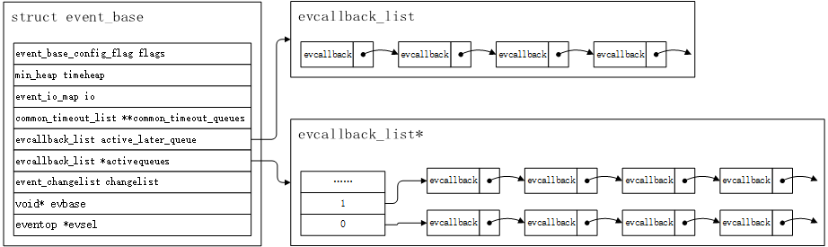图2
从图2中，我们可以看到，activatequeues是一个evcallback_list的数组，而active_later_queue则是一个evcallback_list实例，在开始继续讨论之前，我们先看一下evcallback这个结构：
struct event_callback {
TAILQ_ENTRY(event_callback) evcb_active_next; //逻辑上的下一个callback实例的指针
short evcb_flags; //状态flag，执行到对应的阶段，会将对应的flag参数通过or运算加入进去
ev_uint8_t evcb_pri;//event_callback所在的优先级队列（属于哪个activate_queue），值越小，优先级越高
ev_uint8_t evcb_closure; //event_callback回调类型，类型决定evcb_cb_union选择哪个函数来调用
/* allows us to adopt for different types of events */
union {
void (*evcb_callback)(evutil_socket_t, short, void *);
void (*evcb_selfcb)(struct event_callback *, void *);
void (*evcb_evfinalize)(struct event *, void *);
void (*evcb_cbfinalize)(struct event_callback *, void *);
} evcb_cb_union;
void *evcb_arg; //用户自定义参数，作为回调函数最后一个参数传入
};代码做了些简略的注释，这里再对每个字段分别进行说明：
- evcb_activate_next：在逻辑上，指向下一个event_callback实例的地址，实际逻辑处理有点复杂，这里留给读者自己去探索，这里不再赘述，其内存表示如图2所示。
- evcb_flag：事件的状态阶段标记，比如通过event_assign初始化一个已经创建的event实例时(event包含一个event_callback实例)，会将evcb_flag设置为EVLIST_INIT状态，而插入io这个map时，它会添加多一个位evcb_flag |= EVLIST_INSERTED，当被插入activate_queue的时候，会添加多一个标记evcb_flag |= EVLIST_ACTIVE。它表示event_callback当前所处的状态。
- evcb_pri：表示event_callback实例，处在哪个优先级的活跃列表之中，数字越小，优先级越高。
- evcb_closure：表示event_callback的类型，它的具体值，决定了当event_callback被触发时，执行evcb_cb_union中的哪个函数。我们可以作以下几个分类：
- EV_CLOSURE_EVENT_SIGNAL：注册为信号事件，当有信号时触发，调用evcb_callback函数
- EV_CLOSURE_EVENT_PERSIST：表示这个event是个持久的时间，就是被激活后，塞入激活列表，执行完之后不会(从io map中)清除，并且下次条件满足时会再次触发，调用evcb_callback函数
- EV_CLOSURE_EVENT：表示这个event只会执行一次，调用evcb_callback函数
- EV_CLOSURE_CB_SELF：遇到这种类型时，直接调用evcb_slefcb函数，这个类型比较特殊，目前我只在bufferevent结构(后文会讨论)中见到，当在创建bufferevent实例，并且指定BEV_OPT_DEFER_CALLBACKS标记时生效，作用是当事件被激活时，如果bufferevent被设置了BEV_OPT_DEFER_CALLBACKS，事件不会直接塞入activate_queue中，而是将预先注册的buffervent->defferd函数注册进去，它会调用evcb_selfcb函数。这个函数意味着事件要延迟处理。在我们的使用案例中，不会去设置这个参数，也暂时没遇到什么情景触发它，因此暂时忽略它。
- EV_CLOSURE_EVENT_FINALIZE和EV_CLOSURE_EVENT_FINALIZE_FREE：调用evcb_finalize函数。
- EV_CLOSURE_CB_FINALIZE：事件被回收时的处理函数，比如我们的bufferevent实例的引用计数为0时，意味着它需要被回收，当其被判断要被回收时(通常在某个event_callback实例中被触发)，他会修改当前的event_callback的evcb_closure为EV_CLOSURE_CB_FINALIZE，并且赋值一个回收函数到evcb_cbfinalize中，下次激活列表执行时执行回收函数，回收bufferevent实例。
- evcb_arg：用户自定义的参数，一般作为callback函数的最后一个参数传入。
到目前为止，我就完成了event_callback结构的论述了，这里需要注意的是，我们绝大多数情况，回调函数调用的是evcb_callback函数。后续论述流程时，我只关注最核心的流程，不会对所有的细节进行讨论。现在回过头来，看看evcallback_list结构，这里就不贴代码了，通过图2，我们可以看到，event_base结构中，activatequeue是多维的，evcallback_list* 中，数组的index越小，优先级越高。我们可以指定大于某个值的优先级队列，每次最多只能执行多少个event的参数，默认是全部都执行。一般来说，我们被激活的事件，一般直接被塞到activatequeue中，至于activate_later_queue，我们前面说的defer函数，一次执行的数量超过一定额度时（内部指定值为32）就会被塞入这个列表，由于我不打算深入讨论defer触发的时机和流程，因此activate_later_queue也不会过多着墨。
接下来，我们来看一下event_io_map结构，在event_base结构中，它有一个这个类型的成员–io，现在我们就来看一下它的结构：
struct event_map_entry
{
struct
{
struct event_map_entry *hte_next; //构成链表
#ifdef HT_CACHE_HASH_VALUES
unsigned hte_hash;
#endif
}map_node;
evutil_socket_t fd;
union
{
struct evmap_io evmap_io;
}ent;
};
struct event_io_map
{
//哈希表，连续地址分配
struct event_map_entry **hth_table;
//哈希表的长度
unsigned hth_table_length;
//哈希的元素个数
unsigned hth_n_entries;
//哈希表扩容阈值，当哈希表中元素数目达到这个值就需要进行扩容
unsigned hth_load_limit;
//哈希表的长度所对应素数数组中的索引
int hth_prime_idx;
};源码中用了很多宏，这里将其展开，参阅的是CNHK19的文章，这里就不冒他人之功了。总的来说，它的结构如图3所示：
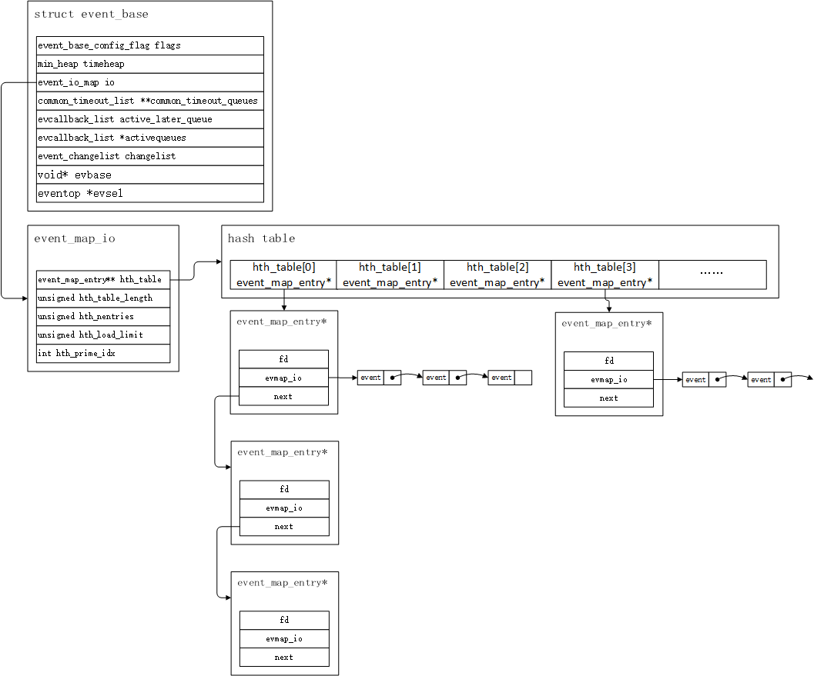图3
上图，基本展示了event_io_map的结构了，其中，hth_table指向了一个链式hash表，hth_table_length指示了它的长度，hth_n_entries指明了这个hash表中，有多少个元素，hth_load_limit指明了，当hash表中的元素超过他时，则进行扩容，扩容时，所有的元素需要进行rehash。接下来我们有几个问题需要思考。
当我们有一个新的event_map_entry要创建，或者查找，或者删除时，首先，我们要知道这个实例，应该放在hash表中的哪个位置。我们知道每个event_map_entry实例，都有一个与之关联的fd变量，而我们需要对fd进行hash计算，这个计算放在一个叫做hashsocket的函数里，它的代码如下所示：
static inline unsigned
hashsocket(struct event_map_entry *e)
{
/* On win32, in practice, the low 2-3 bits of a SOCKET seem not to
* matter. Our hashtable implementation really likes low-order bits,
* though, so let's do the rotate-and-add trick. */
unsigned h = (unsigned) e->fd;
h += (h >> 2) | (h << 30);
return h;
}这个函数，将fd的最低两位和最高两位去掉了，最大限度得让hash值足够散列。接下来就是查找event_map_entry实例，应该位于哪个位置了，计算的方式就是通过取模的方式计算(hash_value % hth_table_length)，得到hth_table的下标值，我们就可以顺着它去查找、插入、删除对应的event_map_entry实例了。为了能够让hash值，尽可能地散列，hth_table的尺寸并非是2的次幂，而是采用了素数。libevent定义了一个素数表，如下所示：
#define HT_GENERATE(name, type, field, hashfn, eqfn, load, mallocfn, \
reallocfn, freefn) \
static unsigned name##_PRIMES[] = { \
53, 97, 193, 389, \
769, 1543, 3079, 6151, \
12289, 24593, 49157, 98317, \
196613, 393241, 786433, 1572869, \
3145739, 6291469, 12582917, 25165843, \
50331653, 100663319, 201326611, 402653189, \
805306457, 1610612741 \
}; \ 后一个数值，接近是前一个值得两倍，上面的hth_prime_idx就是下一次扩容时，primes列表中的下标，htm_table_length就是数组中的某个值。通过这种方式，我们的hashsocket(e) % hth_table_length可以减少一些hash冲突。
接下来要讨论的一个字段是timeheap，libevent默认使用的定时器存储结构，就是用小根堆。现在我通过一些图文，来描述libevent的这种定时器机制，避免贴大量代码。
首先，我们要了解的数据结构是堆，它是一个完全的二叉树，存储形式表现为数组。所谓的完全二叉树，就是除了最后一层，其他层级的节点都是满的，并且最后一层的节点尽量靠在左边。由于存储结构是数组，因此根节点就是array[0]，i是完全二叉树中的第i个节点，并且存在如下关系[1]：
| 位置 | 描述 |
|---|---|
| Arr[(i-1)/2] | 父节点(i>0) |
| Arr[(i*2)+1] | 左孩子节点 |
| Arr[(i*2)+2] | 右孩子节点 |
有了这层关系，那么我们就好定义大根堆和小根堆了。大根堆就是父节点的值要大于等于孩子节点的值，小根堆是父节点要小于等于孩子节点的值，本文只关注小根堆的构建、插入、删除和获取流程，大根堆的实现也类似。现在举一个小根堆的例子：
10 10
/ \ / \
20 100 15 30
/ / \ / \
30 40 50 100 40小根堆的root，是最小值，获取它的效率为O(1)。今天我并不打算贴libevent关于小根堆的实现逻辑，只描述逻辑流程。如图4所示，假设我们的timeheap已经被插入了6个数值，分别是1,3,6,5,9,8：
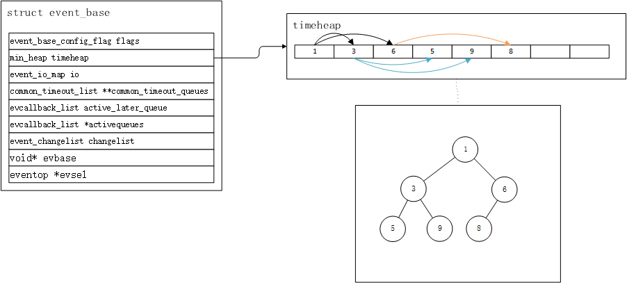图4
上图的数字，表示时间的值，这里为了方便讲述，直接用小额数字来论述，我们可以看到，虽然数组不是完全按照从小到大的方式排序，但是根部的值是最小的，此时我们要插入一个10进去，那么，首先这个10会被放在数组的尾部，得到图5的结果：
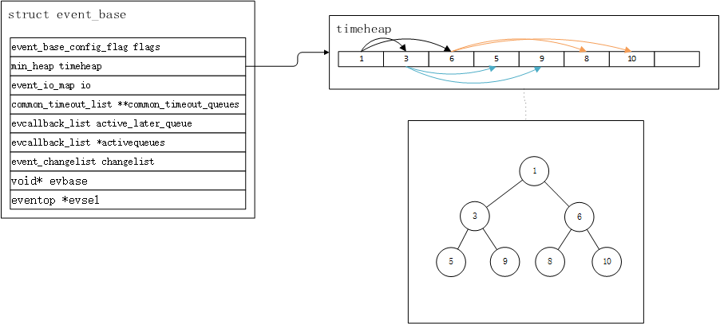图5
因为10比它的根节点大，因此不会做任何调整，如果此时我们再插入一个0，到数组的尾部，得到图6的结果：
图6
由于此时0比它的父节点5小，因此这里需要进行一次shift up操作，将0和5交换，得到图7的结果：
图7
此时，我们发现，0还是比它的父节点3小，因此还要进行一次，shift up操作，得到图8的结果：
图8
到这个时候，0还是比它的父节点1小，因此发生最后一次shift up操作，得到图9的结果：
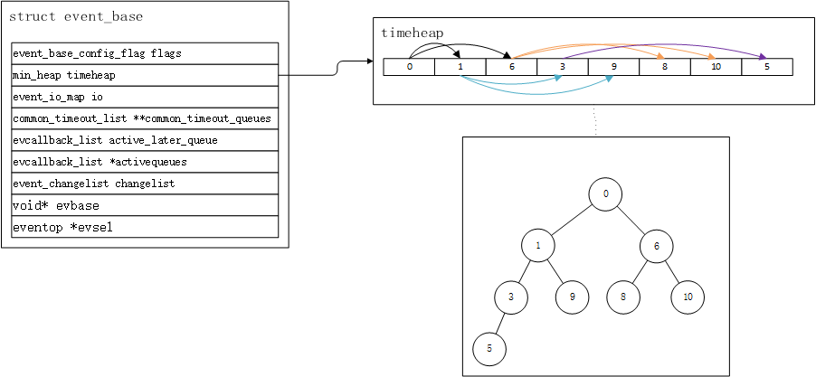图9
到此时，就相当于完成一次排序了，最小值现在位于根部。我们每次获取堆的最小值，只需要取timeheap[0]就可以了。libevent每次从timeheap中，取出根部最小时间值，作为IO多路复用器的最大超时时间，其伪代码如下所示：
tv = timenext() // 获取根部时间节点的时间
// 调用epoll_wait、select等，调用他们线程会投入睡眠，tv作为他们的
// 本次睡眠的最大超时时间
base->evsel->dispatch(tv)
// dispatch唤醒时，未必是达到最大超时时间，因此这里需要取出根节点
// 和当前时间比较，如果当前时间大于根节点的时间，那么就需要将其从小
// 根堆中移除，并且将对应的事件塞入激活列表，小根堆会重新重排，把最小
// 的值推到根部，并如此循环下去，直至根节点的时间大于当前时间，或堆
// 中元素清空为止。
timeout_process() 上面伪代码的注释，已经将libevent定时器的机制，描述得足够清楚了，不过还提到了一点，需要注意，即将根移除后，小根堆需要重排，这个过程是怎样的呢？我们接着图9的结果为例子，将timeheap[0]清理掉，此时我们需要将timeheap中的最后一个有效元素，塞到timeheap的顶部，得到图10的结果：
图10
此时，根部变成了5，这时候需要拿它和左右孩子节点，进行对比，看看是不是比他们都小，如果不是，就选择孩子节点中，最小的那个进行交换，在图10中，5和1进行交换，得到图11的结果：
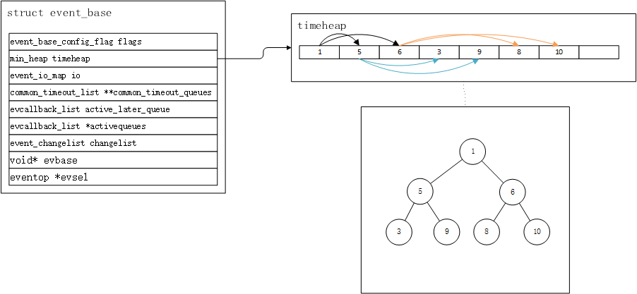图11
再次的，5还是需要和左右孩子节点，进行对比，重复上面的操作，直至比左右孩子节点都小或者相等，或是到到达叶子节点为止，于是得到图12的结果：
图12
到此为止，我们的删除流程就完成了。到这里为止，对于libevent的定时器机制的核心，就论述完了，小根堆和时间轮相比，要简单的多也易于理解。前面，我极度简化了timeheap数组，其实它是一个min_heap结构，其数据结构定义如下所示：
typedef struct min_heap
{
struct event** p;
unsigned n, a;
} min_heap_t;图4~图12的数组内的slot也并非是数字，而是event结构实例的指针，时间信息，也是存放在event结构之中，后面我会讨论这个结构。
接下来，要讨论的字段，就是event_base里的flag字段，这个字段是用来存储配置信息的，默认值是0，我们可以通过event_config结构的flags字段，来填充我们感兴趣的参数，这些参数位于include/event2/event.h文件的event_base_config_flag枚举定义中，读者可以自行查阅。目前，libevent默认的配置，已经满足我们大多数应用情景了，本文的目标是梳理清楚，libevent的核心结构和主要运作流程，受篇幅所限，这些配置细节不进行深入探讨。
对于event_base实例，我们可以通过event_base_new和event_base_new_with_config两个函数来创建。
libevent的核心–event结构
上一节，我花费了一些篇幅，主要介绍了event_base结构中的主要成员，这一节，就来介绍event结构，以及它的添加、删除和运作机制。
首先回顾一下图3，我们可以发现，每个fd都有与之关联的event_map_entry结构，而event_map_entry结构中，又有一个event双向链表，我们创建出来的event，最后就是会被塞入这个链表中，当然，删除一个event时，也会将其从这个链表中移除。我们首先来看一下event的数据结构：
struct event {
struct event_callback ev_evcallback;
/* for managing timeouts */
union {
TAILQ_ENTRY(event) ev_next_with_common_timeout;
int min_heap_idx;
} ev_timeout_pos;
evutil_socket_t ev_fd;
struct event_base *ev_base;
union {
/* used for io events */
struct {
LIST_ENTRY (event) ev_io_next;
struct timeval ev_timeout;
} ev_io;
/* used by signal events */
struct {
LIST_ENTRY (event) ev_signal_next;
short ev_ncalls;
/* Allows deletes in callback */
short *ev_pncalls;
} ev_signal;
} ev_;
short ev_events;
short ev_res; /* result passed to event callback */
struct timeval ev_timeout;
};现在我们来探索一下，event的数据结构：
- ev_evcallback：其实就是event_callback类型的变量，往前面回顾一下该数据结构即可
- ev_timeout_pos：我们默认使用小根堆，因此使用min_heap_idx，它在event是定时事件的时候使用，min_heap_idx的值表示事件位于小根堆数组的哪个位置
- ev_fd：socket的fd
- ev_base：就是前面讨论过的event_base实例的指针
- ev_：信号处理不是本文探讨的范畴，因此我们只考虑ev_io的情况，这个结构内部有两个成员：
- ev_io_next：回顾一下图3，它指向下一个event实例
- ev_timeout：在event是定时事件时发生作用，并且是一个持久的定时事件(即ev_events包含EV_PERSIST，ev_evcallback.ev_closure包含EV_CLOSURE_EVENT_PERSIST)，它存储的是相对时间，也就记录距现在多长时间后，再次激活event事件
- ev_events：代表事件的类别和属性，类别包括EV_READ(读)、EV_WRITE(写)等。属性包括EV_PERSIT(表示是个持续事件，即激活执行后，事件不会从evmap_io_map中删除，如果没设置这个属性，则表示事件只能被激活一次，被激活执行后，就会从evmap_io_map中清除)等。这里需要注意的是，ev_events设置为EV_PERSIST的时候，ev_evcallback的evcb_closre也会被同时设置为EV_CLOSURE_EVENT_PERSIST
- ev_res：当事件被激活时，事件要被塞入激活列表(activequeue)时，它会被设置，主要分以下几种情况：
- IO多路复用器(select、epoll_wait)被唤醒时，检测到的读(EV_READ)、写(EV_WRITE)和关闭(EV_CLOSE)事件，读写事件可以同时存在
- 定时事件触发时，将其设置为EV_TIMEOUT
- ev_timeout：当event事件是定时事件时，要被使用。它和ev_中的ev_timeout不同的是，它一般记录的是绝对时间，定时器的触发时机，以这个时间为准，并且可以在定时类型为持续触发和非持续触发两种情况下使用
现在，对event结构的介绍，就到此为止了，我们可以使用event_new函数来创建一个事件，也可以使用event_assign函数来对一个已经存在的event实例，进行初始化操作，我们现在来看一下，这两个函数的定义：
@ param 1：event_base实例
@ param 2：socket的fd
@ param 3：event的事件和属性类别，比如EV_READ、EV_WRITE、EV_PERSIST等
@ param 4：ev_evcallback的回调函数，事件触发时调用
@ param 5：自定义变量，作为callback函数的最后一个参数传入
@ return ：返回一个event实例的指针
struct event *event_new(struct event_base *, evutil_socket_t, short, event_callback_fn, void *);
@ param 1：event实例指针
@ param 2：event_base实例的指针
@ param 3：socket的fd
@ param 4：event的事件和属性类别，比如EV_READ、EV_WRITE、EV_PERSIST等
@ param 5：ev_evcallback的回调函数，事件触发时调用
@ param 6：自定义变量，作为callback函数的最后一个参数传入
@ return ：返回0表示成功
int event_assign(struct event *,struct event_base *, evutil_socket_t, short, event_callback_fn, void *);完成event实例的创建之后，接下来就是对事件进行添加和删除了，这两个函数分别是event_add和event_del：
// ev为要添加的事件，如果timeout参数不为NULL，意味着这是个定时事件
// timeout指定多长时间之后触发定时器。调用event_add进行事件添加时，
// 会顺带将与event关联的fd添加到IO多路复用器的监听列表中(比如epoll等)
int event_add(struct event *ev, const struct timeval *timeout);
// event删除时，会将对应的fd从IO多路复用器的监听列表中清除(比如epoll等)
int event_del(struct event *ev);我现在来看一下，一个已经创建好的event，是如何添加到event_io_map中的(结合图3来看)。这个操作是通过一个叫做evmap_io_add的函数进行的，它的主要逻辑是：
- 通过hashsocket函数计算出event fd的hash值
- hth_table_idx = hashsocket(ev) % hth_table_length
- 获取首个event_map_entry实例，event_map_entry* head = hth_table[hth_table_idx]
- 遍历event_map_entry，找到fd与event fd相等的event_map_entry实例
- 将event插入event_map_entry的evmap_io实例的event列表中
删除一个event实例，前面几个步骤都一样，最后一个步骤则变成，遍历event列表，找到对应的event，然后将其移除。
事件循环
接下来，要讨论的则是我们的事件循环，执行这个流程的函数主要有两个，一个是event_base_dishatch，另一个则是event_base_loop函数，我们先看一下他们的定义：
int event_base_loop(struct event_base* base, int flags);它的第一个参数是传入event_base实例，第二个参数是填的flag标记，标记会影响到loop的行为，这个后面我会讨论，先来看一下不填写标记，也就是flag为0的伪代码：
function event_base_loop(base, no_flag) {
local done = 0;
while (!done) {
// 从小根堆中，取出根部，作为dispatch的最大等待时间
// 如果小根堆为空，则tv为NULL，如果tv为NULL，那么dispatch会一直等待
local tv = timeout_next(base)
// 没注册事件，也没有激活的事件，直接退出，这种情况下，libevent
// 没有运转的需要
if (!has_activate_callbacks(base) && has_events(base)) {
done = 1;
break;
}
// dispatch会根据实际情况，调用select、poll、或者是
// epoll_wait，tv为NULL则表示这里会一直睡眠，直至
// 有IO事件触发，tv不为NULL，则它成为最大的睡眠时间
// IO事件触发后，相关的event_callback实例，会被塞入
// 激活列表中
local res = base->evsel->dispatch(base, tv);
// 这个函数，不断从小根堆中，抽取超时时间小于当前时间的根节点，
// 并满足条件的将定时事件的event_callback塞入激活事件列表中
timeout_process(base);
if (has_activate_callbacks(base)) { // 判断激活队列中是否有事件
event_process_activate(base); // 执行激活队列中，事件的callback函数
}
}
}上述伪代码，展示了event_base_loop函数的核心运作流程，其中省去了大量无关的细节，上述的no_flag，其实质就是flags值为0的情况，实际上，libevent为我们提供了另一个函数，用来简化调用，这个函数的定义如下所示：
int event_dispatch(void)
{
return (event_loop(0));
}我们接下来来看一下，设置flags的情况，主要针对EVENT_LOOP_ONCE和EVENT_LOOP_NONBLOCK，我们来看一下，设置了EVENT_LOOP_ONCE和EVENT_LOOP_NONBLOCK时的伪代码：
function event_base_loop(base, flags = EVENT_LOOP_ONCE|EVENT_LOOP_NONBLOCK) {
local done = 0;
while (!done) {
local tv = NULL
// 如果flags设置了EVENT_LOOP_NONBLOCK的标记，那么dispatch将
// 不会进行睡眠，而是立刻被唤醒
if (flags & EVENT_LOOP_NONBLOCK)
tv = 0;
else
tv = timeout_next(base);
// 没注册事件，也没有激活的事件，直接退出，这种情况下，libevent
// 没有运转的需要
if (!has_activate_callbacks(base) && has_events(base)) {
done = 1;
break;
}
// dispatch会根据实际情况，调用select、poll、或者是
// epoll_wait，tv为NULL则表示这里会一直睡眠，直至
// 有IO事件触发，tv不为NULL，则它成为最大的睡眠时间
// 如果tv为0，那么dispatch函数将不会进行睡眠，而是立刻被唤醒
// IO事件触发后，相关的event_callback实例，会被塞入
// 激活列表中
local res = base->evsel->dispatch(base, tv);
// 这个函数，不断从小根堆中，抽取超时时间小于当前时间的根节点，
// 并满足条件的将定时事件的event_callback塞入激活事件列表中
timeout_process(base);
if (has_activate_callbacks(base)) { // 判断激活队列中是否有事件
local n = event_process_activate(base); // 执行激活队列中，事件的callback函数
if (flags & EVENT_LOOP_ONCE &&
!has_activate_callbacks(base) &&
n != 0) {
done = 1;
}
}
else if (flags & EVENT_LOOP_NONBLOCK) {
done = 1;
}
}
}我们可以看到，当flags设置为EVENT_LOOP_ONCE时，这意味着，dispatch函数会被阻塞一次，当有IO或定时事件触发，并全部处理完以后，event_base_loop函数的循环就会终止(但是如果没有执行过任何一个激活事件，它仍然会继续循环)。设置了EVENT_LOOP_NONBLOCK标记之后，event_loop_base函数，不会再从小根堆里取根节点，而是将超时时间设置为0，这意味着dispatch函数会立即被唤醒，并且在没有事件被激活的情况下，退出event_base_loop的循环。
bufferevent结构
我们前面已经了解到了event_base结构，event结构，事件循环流程之类的。我们现在来看一下，注册一个读写事件的大致的逻辑流程是怎样的：
void socket_read_cb(evutil_socket_t fd, short events, void* cbarg) {
// 调用read函数，读取数据
// 将读出的数据，塞入自定义的buffer列表中
// 处理分包粘包，得到完整的请求包
}
void listener_cb(evutil_socket_t listener_fd, short events, void* cbarg) {
evutil_socket_t fd = accept(listener_fd, ...)
event_base* base = (event_base*)cbarg;
event* read_ev = event_new(base, fd, EV_READ, socket_read_cb, base);
event_add(base, read_ev);
}
void main() {
event_base* base = event_base_new();
// 创建listen socket，绑定端口，设置为listen状态等
// 有连接到达时，调用listener_cb函数
event_base_dispatch(base);
}上述伪代码，先是创建了一个listen的socket，并且在绑定了端口和设置为listen状态之后，就开始等待连接到达。当新的连接到达时，event_base_dispatch内的base->evsel->dispatch函数被唤醒，并且将可读事件塞入激活列表中，最后再调用它们，此时listener_cb函数被触发。在这个函数，显示accept了一个新的连接，然后为其创建了一个event，并设置了socket_read_cb作为它的读取事件，当该fd有可读事件时，这个函数会被调用，我们可以看到，伪代码中，我们需要自己主动去读取数据，然后自己管理读取buffer列表等等，处理起来非常麻烦。为此，libevent给我们提供了一个新的结构，这个结构就叫做bufferevent，它为我们管理读写的buffer队列，帮我们处理读写事件，甚至在某种程度上，实现了网络库的proactor模式。同时它也为我们在多线程的情况下，提供了安全的读写操作功能，使得我们不用自己去写加锁解锁逻辑。
我们首先来研究一下，bufferevent的数据结构：
struct bufferevent {
// event_base* 实例指针
struct event_base *ev_base;
// bufferevent_ops包含几个函数指针，这里限于篇幅，只讨论最关键的几个
// be_ops->enable:我们需要通过bufferevent_enable函数，来注册bufferevent的读写事件
// 在调用它的时候，be_ops->enable函数会被调用，添加读写event到evmap_io_map的逻辑，就
// 是它来实现的。
// be_ops->disable:我们需要通过bufferevent_disable函数，来删除bufferevent实例的读写事件
// 调用它的时候，be_ops->disable函数会被调用，从evmap_io_map中删除读写event的逻辑，就是它执行的
// be_ops->destruct:在销毁bufferevent实例的时候调用，主要的操作是调用close api，关闭socket实例
const struct bufferevent_ops *be_ops;
// 当可读事件触发时，会调用ev_read的callback函数
struct event ev_read;
// 当可写事件触发时，会调用ev_write的callback函数
struct event ev_write;
// 当ev_read事件的callback函数被调用时，它会主动读取数据，并存入input的缓存中，evbuffer
// 实例，内部有个锁变量，在多线程使用情形中，保证线程安全。缓存是个链表结构。
struct evbuffer *input;
// 当ev_write事件的callback函数被调用时，他会主动写数据到outpur缓存中，evbuffer实例，内
// 部有个锁变量，在多线程使用情形中，保证线程安全。缓存是个链表结构。
struct evbuffer *output;
// 读取数据水位标记：当input缓存的数据，高于wm_read.low时，且低于wm_read.high时，
// bufferevent->readcb会被调用。默认low和high都是0，表示一有数据在input缓冲，readcb就会被
// 调用。我们讨论的情景，均是默认的情况。
struct event_watermark wm_read;
// 写数据的水位标记：当output缓存的数据，低于wm_write.low时，bufferevent->writecb会被调用
// 默认值是0，因此只有output缓冲被处理完时，它才会被调用。我们讨论的情景，均是默认的情况。
struct event_watermark wm_write;
// 用户注册的读取事件，通过bufferevent_setcb函数注册。一般情况下，IO读取事件准备就绪后，ev_read
// 的回调函数会被调用，这个回调函数是libevent内部定义的一个，将数据读取，并放入input缓存的函数，
// 在这个操作完成之后，就会调用readcb函数，用来告知用户，有数据到来了，并且到来多少个字节，用户可以
// 直接从input buffer获取。
bufferevent_data_cb readcb;
// 用户注册的写事件，通过bufferevent_setcb函数注册。一般情况下，IO写事件准备就绪之后，ev_write的
// 回调函数会被调用，这个回调函数时libevent内部定义的一个函数，它将output buffer数据取出，并且调用
// 系统write函数写数据。当output buffer的剩余字节数小于等于wm_write.low的时候，writecb函数被调用。
bufferevent_data_cb writecb;
// 用户注册的错误处理事件，通过bufferevent_setcb函数注册。一般有错误会通过这个函数抛出，我们可以在
// 这个函数被回调时，关闭连接。
bufferevent_event_cb errorcb;
void *cbarg;
// 读事件的超时时间
struct timeval timeout_read;
// 写事件的超时时间
struct timeval timeout_write;
// 当前被允许的事件，通过bufferevent_enable来指定，目前支持EV_READ和EV_WRITE两种
short enabled;
};注释对每一个字段进行了解释，这里就不作额外的说明了，这个结构，也是bufferevent最核心的不过，不过可能会在未来的版本进行改动，甚至被干掉。实际上，bufferevent还有另一个结构，叫做bufferevent_private结构，这个结构也有很多参数，限于篇幅，我只对部分字段进行说明：
struct bufferevent_private {
// 就是刚刚讨论过的bufferevent结构
struct bufferevent bev;
...
// bufferevent的选项，通过bufferevent_socket_new函数指定，主要参数有
// BEV_OPT_CLOSE_ON_FREE：bufferevent实例被销毁时，释放socket实例
// BEV_OPT_THREADSAFE：设置这个标记，会为bev->input和bev->output分配
// 一个锁，这个锁和后面的lock是一样的。
enum bufferevent_options options;
// 引用计数，当为0时，bufferevent实例会被释放
int refcnt;
// BEV_OPT_THREADSAFE被设置时，它会被分配一个锁的实例
void *lock;
...
};写到这里，我们就完成了bufferevent数据结构，主要部分的论述了，接下来，我们来看一下，bufferevent相关的几个重要的api，首先就是创建bufferevent的api：
@ param 1:传入event_base实例
@ param 2:socket fd
@ param 3:BEV_OPT_* 参数，可以通过or运算选择多个参数
struct bufferevent* bufferevent_socket_new(struct event_base *base, evutil_socket_t fd, int options)一个bufferevent被创建出来之后，我们还需要为其设置回调函数，这个函数的定义如下所示：
typedef void (*bufferevent_data_cb)(struct bufferevent *bev, void *ctx);
typedef void (*bufferevent_event_cb)(struct bufferevent *bev, short what, void *ctx);
@ param 1:要被传入的bufferevent实例
@ param 2:要被传入的readcb函数，它被赋值到bev->readcb上
@ param 3:要被传入的writecb函数，它被赋值到bev->writecb上
@ param 4:要被传入的错误处理函数，它被赋值到bev->errorcb上
@ param 5:要被传入的自定义变量，一般作为回调函数的最后一个参数传入
void
bufferevent_setcb(struct bufferevent *bufev,
bufferevent_data_cb readcb, bufferevent_data_cb writecb,
bufferevent_event_cb eventcb, void *cbarg)设置为callback函数之后，我们需要调用enable函数注册读写事件，才能让设置好的callback函数被调用，有enable去注册，就有disable去反注册，其定义如下所示：
@ param 1:bufferevent实例指针
@ param 2:需要注册的事件类型，一般是EV_READ、EV_WRITE
int bufferevent_enable(struct bufferevent *bufev, short event);
int bufferevent_disable(struct bufferevent *bufev, short event);注册了读写事件之后，读取数据包的操作，是在readcb函数里做的，而写入数据，我们可以调用如下api来执行：
@ param 1:bufferevent实例指针
@ param 2:要写入的数据缓存地址
@ param 3:写入多少个字节
int bufferevent_write(struct bufferevent *bufev, const void *data, size_t size);如果我们在调用bufferevent_socket_new阶段，设置了BEV_OPT_THREADSAFE标记，那么bufferevent_write函数就是线程安全的。bufferevent实例，有创建，就有销毁，销毁的api的定义如下：
void bufferevent_free(struct bufferevent *bufev);到目前为止，我们就完成了bufferevent结构的论述了。
一个多线程使用的例子
在讲解完基本的数据结构，和事件循环流程之后，现在通过一个例子，以图文的方式，来展示libevent的运作流程。在本例子中，首先我要介绍的是这个demo的线程模型，然后是基本的类，以及他们之间的关系，再接下来会去描述各个线程的初始化流程，客户端连接流程，数据包收发以及连接关闭流程。读者可以通过这个链接，找到demo的源代码。demo包含一个测试客户端，和一个测试服务端，测试服务端先启动，并且监听一个端口，等待测试客户端发起连接。测试客户端发起连接之后，测试服务端会为其创建一个Connection实例，用于管理连接和数据包的收发，这些操作均是在main thread中执行。测试客户端完成连接之后，会向测试服务端发送数据包，测试服务端收到后，会向所有的worker线程广播，worker线程收到数据包之后，会向main线程回写消息，并经由它同步给测试客户端。
例子的线程模型
我们首先来看一下，demo的线程模型，它如图13所示：
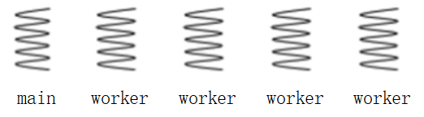图13
它一共有两类线程，分别是main thread和worker thread。其中main thread就是我们说的主线程，它只有一条，而worker thread则有4条。我们的main thread，会在进程启动时运行，它会初始化对应的模块，并最终创建4条worker线程。关于各个线程的初始化和运作机制，我们需要先了解了，demo包含哪些类模块，以及它们之间的关系之后，再进行讨论。
例子的类模块
首先，我要论述是在我们的demo中，最基础的一个类–connection，限于篇幅，我这里不打算贴太多代码细节，而是将最重要的部分，通过一张类图来展示：
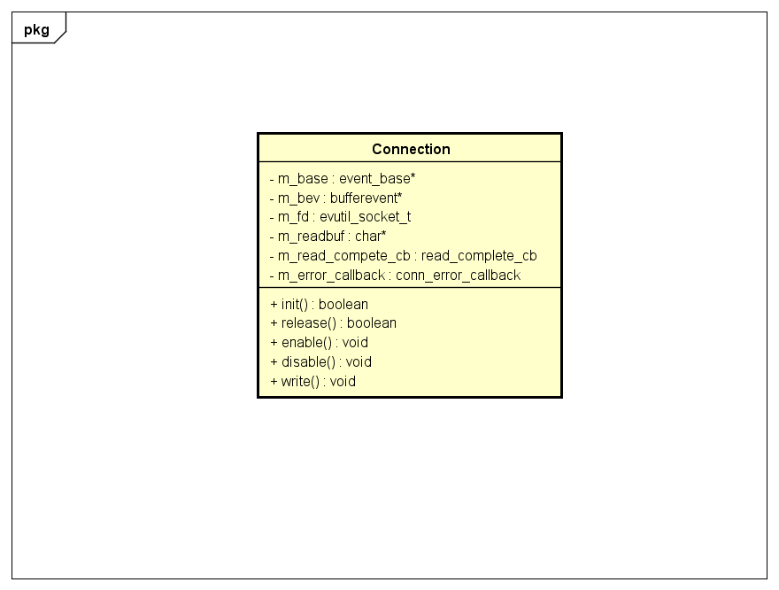图14
图14并没有展示所有的成员函数和成员变量，而是展示了最关键的部分，这里做一个简单的说明，先看看成员变量：
- m_base：一个event_base实例，Connection实例创建后，通过init函数进行初始化的时候指定。
- m_bev：一个bufferevent类型的实例，是libevent事件机制的核心，Connection实例创建之后，调用init函数初始化时，会在内部创建这个实例。
- m_fd：socket的fd。
- m_read_complete_cb：connection实例，读完业务层定义的一个完整的数据包之后，通过这个函数抛给上一层。
- m_error_callback：如果connection实例，在收发数据包的过程中，遇到任何问题，都通过这个函数，抛给上一层(比如ConnectionMgr实例，通常是直接关闭连接)。
接下来，我们来看一下Connection类的成员函数：
- init：初始化函数，一个connection实例被创建之后，需要调用这个函数进行初始化，它需要传入一个event_base实例指针，它还会创建一个bufferevent的实例，并赋值到m_bev上。为m_readbuf实例，开辟堆内存空间等。
- release：要关闭一个连接时，首先要调用connection实例的release函数，将m_readbuf实例的内存空间释放，并且释放m_bev实例等
- enable：这个函数会转调bufferevent_enable函数，用来注册connection的读写事件到libevent中。
- disable：这个函数会转调bufferevent_disable函数，用来反注册在libevent实例中的，connection读写事件。
- write：这个函数会转调bufferevent_write函数，它会将我们希望写入的数据包，存放到m_bev实例的output缓存链表中，最后在可写事件触发时，将output缓存链表中的数据包写入socket的kernel buffer中。
到现在为止，我们就完成了Connection类的描述了。
在完成了Connection类的论述之后，我们现在进入到管理Connection类实例的两个类，他们分别是ConnectionMgr和EVPair。前者是用来管理客户端连接和数据包收发的类，后者是管理，运行在不同线程中模块之间，通信的类，我们首先来看一下ConnectionMgr这个类：
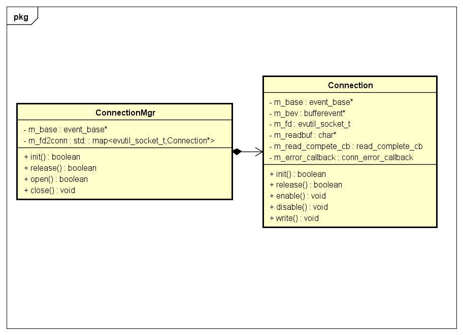图15
ConnectionMgr类的成员变量，主要有两个，一个是event_base类型的实例，另一个则是，以evutil_socket_t为key，以Connection类指针为value的map。其成员函数，主要有几个：
- init：用于初始化ConnectionMgr类，此时需要传入event_base* 类型的指针。这个函数还会创建map实例。
- release：用于销毁所有的Connection类实例。
- open：当一个新的连接时间触发时调用。
- close：当连接出现网络错误时调用(包括关闭事件)。
接下来，我们来看一下EVPair类的定义：
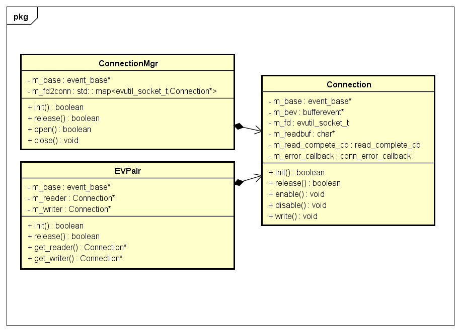图16
从成员变量上看，它一共有三个，分别是event_base实例，一个用于处理读事件的Connection实例，一个专门处理写事件的Connection实例。从成员函数看，它也非常简单，一个用于初始化EVPair实例的init函数，一个用于处理销毁前释放事件的release函数，一个获取read的Connection实例的函数，一个获取write的Connection实例的函数。上述两个类，均组合了Connection类实例。
我们最后一个要看的类，是Listener类，这个类的实例，主要用于监听某个端口，我们需要通过这个类的实例，用于处理新的客户端连接
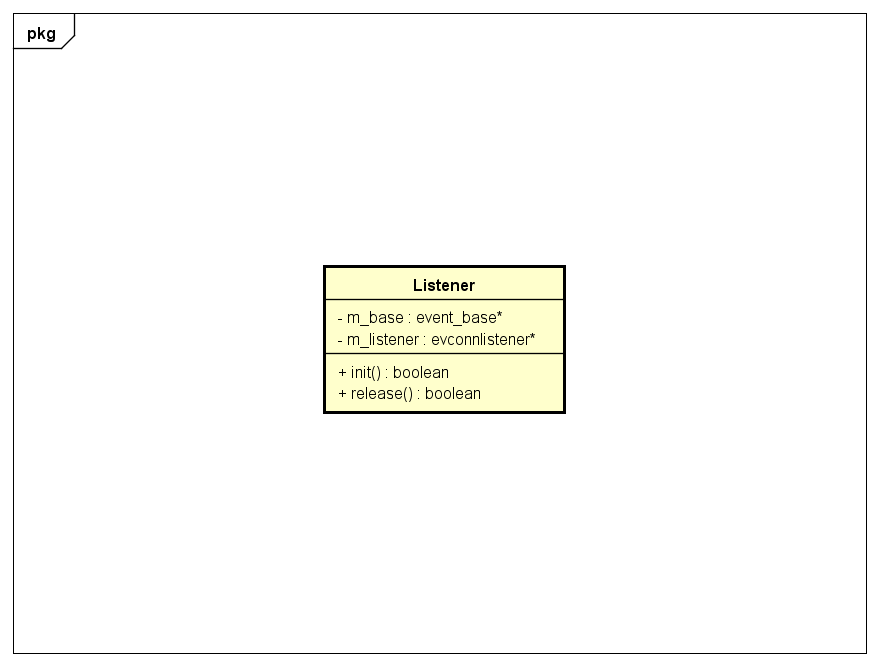图17
listener类有两个主要的成员变量，一个是event_base* 指针，一个是evconnlistener* 指针，这个指针是libevent提供给我们使用的，专门用于处理监听和处理新连接实践的实例。同样的，它只有一个init和一个release函数，更多的操作细节，我将在后面的内容中指出。
线程初始化
我们前面已经讨论过，demo的线程模型了，现在来看一下各类线程的初始化逻辑，其实，一共也就两类，一类是main thread，另一类则是worker thread。前面我们也已经说过，整个demo包含一个测试客户端，和一个测试服务端，我们讨论的重点是，测试服务端的一些逻辑流程。这里我们来看一下测试服务端的入口函数：
1 static void run_server() {
2 #ifdef WIN32
3 evthread_use_windows_threads();
4 #else
5 evthread_use_pthreads();
6 #endif
7
8 event_base* base = event_base_new();
9
10 s_main_evpair = new EVPair();
11 s_main_evpair->init(base, -1);
12 s_main_evpair->get_reader()->set_callback(mt_evpair_read_complete, mt_evpair_error_callback);
13 s_main_evpair->get_writer()->set_callback(NULL, mt_evpair_error_callback);
14
15 Listener* listener = new Listener();
16 // listen and bind 127.0.0.1:8888
17 listener->init(base, 8888, mt_listener_cb);
18
19 s_conn_mgr = new ConnectionMgr();
20 s_conn_mgr->init(base);
21
22 create_worker_threads();
23
24 event_base_dispatch(base);
25
26 destory_worker_threads();
27
28 s_conn_mgr->release();
29 delete s_conn_mgr;
30
31 listener->release();
32 delete listener;
33
34 s_main_evpair->release();
35 delete s_main_evpair;
36
37 event_base_free(base);
38 }我们启动测试服务器程序之后，会先执行主线程(也就是我们的main thread)，而这个run_server函数，就是在主线程里执行的。函数首先要执行的是，event_use_threads()函数，会为一个全局变量赋值一个创建锁实例的函数，不同的平台，会使用不同的创建函数，如果不调用这个函数，那么libevent中所有的实例，都不会去创建锁变量，也就是说线程安全就得完全由自己来把控。接下来，就是执行到第8行的函数，event_base_new()函数，它创建了，我们文章开头讨论的event_base实例。于是，我们得到了如图18的结果：
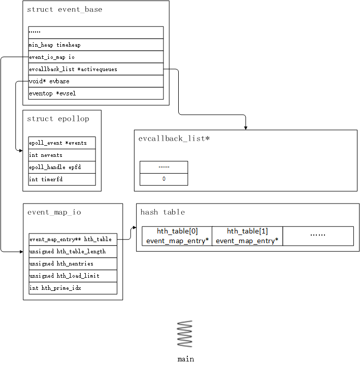图18
图中的main thread图标，表示当前的逻辑处在main thread之中，目前我们只保留最核心的部分，比如evbase、activatequeue、event_io_map和timeheap。其中activatequeue在本例中，只有一个优先级队列。接下来，我们将创建一个EVPair类的实例，前面已经提到过EVPair是线程间通信的重要组件，在它创建并初始化以后，它会有两个event实例，并且注册到libevent中，得到图19的结果：
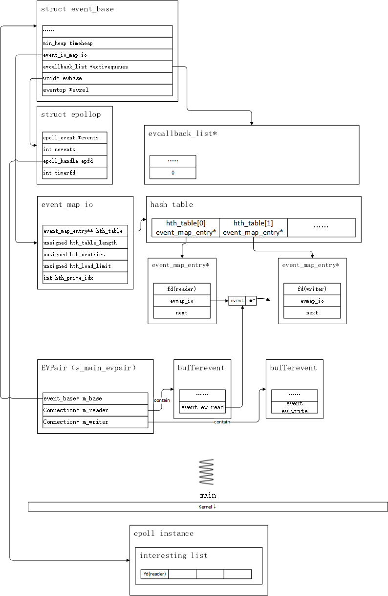图19
通过图19，我们可以看到，EVPair实例被创建了，这个实例的地址被保存到一个叫做s_main_evpair的变量之中。这个实例主要包含三个主要的成员变量，其中m_base就是前面刚刚创建的event_base实例，一个用于处理读事件的Connection实例，和一个用于处理写事件的Connection实例。我们可以观察到，EVPair实例，在完成初始化之后，m_read所包含的bufferevent成员变量，创建了一个event_map_entry实例，并且将读事件放到了对应的evmap_io列表中，此时，对应的fd也被添加到epoll实例的interesting列表中，而负责处理写事件的bufferevent实例，只是在event_map_io中，为对应的fd创建了一个与之关联的event_map_entry实例，并且它的evmap_io中，没有任何事件被注册，且epoll的interesting列表中，也没有和响应写事件相关联的fd。这是为什么呢？因为此时，我们的m_writer包含的bufferevent实例，写入缓存为空，如果此时添加写事件，那么epoll会不断唤醒epoll_wait，也就是说上面讨论的事件循环会被不断唤醒，但是又没有实际的事情可做，白白浪费调度开销，因此在没有数据写入的时候，写事件应该从epoll实例和libevent的事件列表中移除。
接下来，我们会执行到第15行的逻辑，这里创建了我们上面所说的listener实例，这个listener内部包含一个evconnlistener实例，这个evconnlistener实例，内部包含了一个专门用于监听读事件的event实例。listener实例的初始化流程如下所示：
- 创建一个系统socket实例，得到listen_fd
- 绑定指定端口(8888)，并设置为listen状态
- 初始化evconnlistener内部的event实例，将listen_fd与之关联，这个event实例姑且称之为ev_listen
- 将ev_listen，添加到event_io_map之中
- 将listen_fd添加到epoll的interesting列表中
我们的逻辑流程，接着往下走，执行到第19行的时候，会创建一个ConnectionMgr实例，这个实例初始化过程中，没有什么很特殊的需要处理的流程，因此这里暂时略过。接下来就是创建各种worker线程，并执行他们的初始化流程，完成之后，主线程就进入到事件循环之中，并且处于阻塞状态。
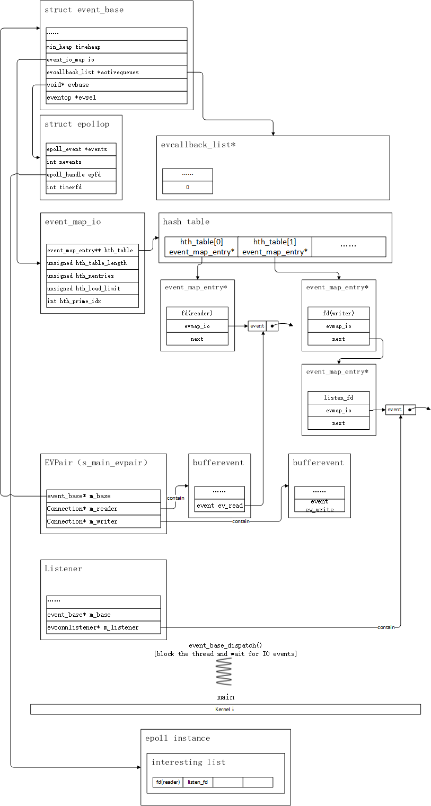图20
在完成了main thread的论述之后，接下来就是对worker thread进行论述了，worker thread的初始化逻辑如下所示：
static void worker_thread(int thread_num) {
int t_num = thread_num;
char temp[512] = { 0 };
sprintf_s(temp, "%s:%d %s thread_id:%d\n", "worker", t_num, "start", std::this_thread::get_id());
std::cout << temp << std::endl;
event_base* base = event_base_new();
EVPair* evpair = new EVPair();
evpair->init(base, t_num);
evpair->get_reader()->set_callback(wt_evpair_read_complete, wt_evpair_error_callback);
evpair->get_writer()->set_callback(NULL, wt_evpair_error_callback);
s_evpair[t_num] = evpair;
while (1) {
event_base_dispatch(base);
usleep(1);
}
evpair->release();
delete evpair;
event_base_free(base);
}整体上和main thread的差不多，这里留给读者自己去构思内存结构图的构建，这里不再赘述。
测试客户端连接流程
在完成了各个线程的初始化流程之后，我们现在来看一下连接流程。在启动完测试服务端之后，我们需要开始启动测试客户端，测试客户端的流程比较简单，并且在使用libevent的地方，和测试服务端很类似，因此这里就深入探讨，而是简单概述一下其逻辑流程：
- 创建一个系统socket，获得一个fd
- 以阻塞模式，向127.0.0.1:8888发起连接
- 连接成功之后，向测试服务端发送”hello world”字符串
- 等待服务端的回包，并将回包打印
我们可以看到，整个流程，首先要做的则是向服务器发起连接。测试客户端，调用connect函数之后，就向测试服务端发起了三次握手，在完成tcp三次握手之后，我们的epoll实例，就检测到listen_fd有可读事件，于是得到图21的结果：
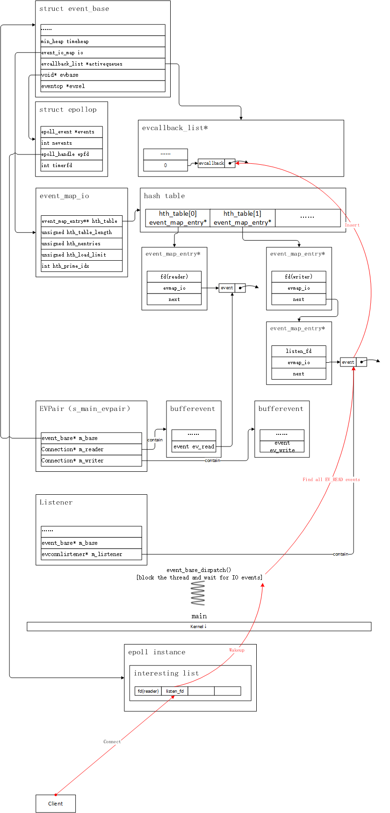图21
当客户端到服务器连接的三次握手完成时，epoll会被激活，并返回可读事件列表，此时event_base_dispatch函数会被唤醒，并且开始处理listen_fd的可读事件，它首先会到event_io_map中，找到和listen_fd关联的event_map_entry实例(前文论述过查找规则)，然后找出所有的可读事件，并且将event结构实例内的event_callback实例的指针，塞到event_base实例的activatequeue中。尔后，event_base_dispatch函数，会逐个执行activatequeue内的事件函数，这里，event_base_dispatch函数，最终会执行到与listen_fd关联的event_callback函数实例，我们前面已经讨论过这个结构，在我们的例子中，这个回调实例，绑定了一个内部定义的listen_read_cb函数，这个函数会accept一个新的连接，并且连同fd，传入并执行一个需要预先注册的连接处理回调函数，在本例中，这个回调函数，就是与main函数同处一个文件的mt_listen_cb函数。这个函数的定义如下所示：
static void
mt_listener_cb(struct evconnlistener *listener, evutil_socket_t fd,
struct sockaddr *sa, int socklen, void *user_data)
{
char temp[512] = { 0 };
sprintf_s(temp, "new connection accept %d", fd);
std::cout << temp << std::endl;
sockaddr_in* sin = (sockaddr_in*)sa;
int port = sin->sin_port;
int ip = inet_pton(AF_INET, sa->sa_data, &(sin->sin_addr));
s_conn_mgr->open(fd, BEV_OPT_CLOSE_ON_FREE, ip, port);
Connection* conn = s_conn_mgr->get_by(fd);
conn->set_callback(mt_conn_read_complete, mt_connection_error_callback);
}也就是说，我们刚才连接建立时，一系列的执行流程，最终会调用到这个函数，它的执行逻辑也很简单，就是通过ConnectionMgr实例，创建一个Connection实例。于是我们得到了图22的结果：
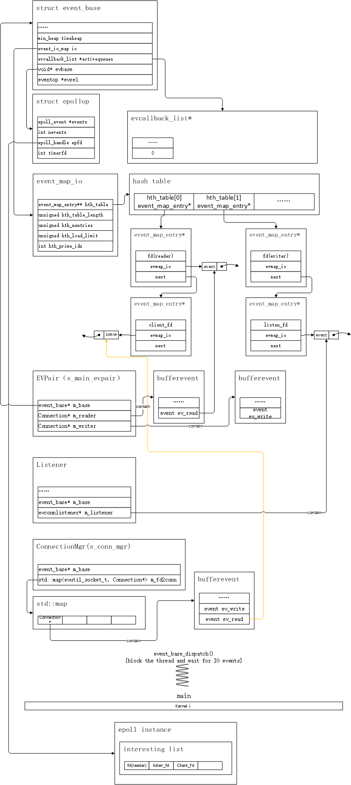图22
我们可以看到，ConnectionMgr内，多了一个Connection类的实例，实例内部的bufferevent实例中的ev_read事件，也被添加到新创建好的event_map_entry的evmap_io列表之中，同时，与之关联的client_fd也被添加到了epoll的interesting列表中，等待读事件触发，我们可以看到，激活列表中的回调函数，执行完之后，会被移除。到这里为止，我们就完成了连接流程的讨论了。接下来，我们就开始讨论数据包的读写操作。
数据包读写流程
客户端，在完成连接流程之后，就会向服务端发送hello world的数据包，在我们的例子中，数据包的格式如下所示：
+--------+----------------+
|2 bytes | body |
+--------+----------------+首部由两个字节组成，标识整个数据包的大小，单个数据包大小不能超过65535个字节(64k)。body部分，就是数据包的内容，比如我们客户端要发送的”hello world”字符串。测试客户端，会将这样的数据包，发给测试服务器。于是，我们得到图23的结果：
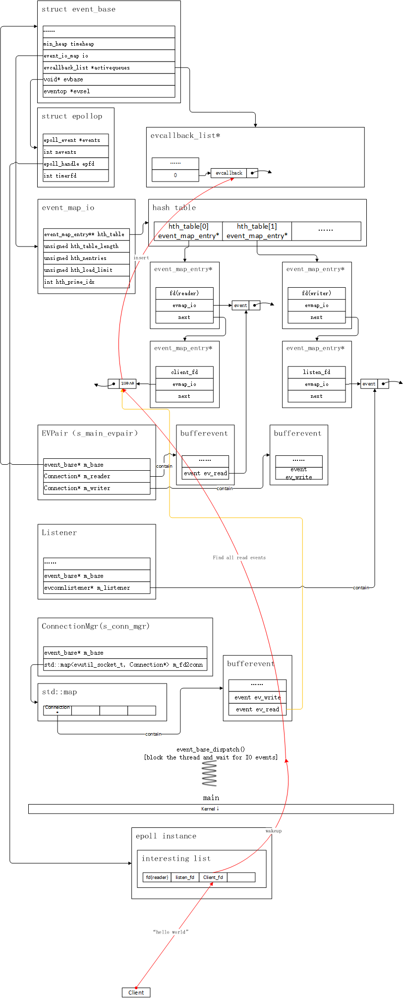图23
顺着图23的红色箭头，我们可以看到libevent的整个操作流程，首先是kernel层里的epoll实例，最先检测到client_fd有读事件触发，尔后event_base_dispatch函数被唤醒，它通过client_fd到event_io_map中，找到自己对应的event_map_entry实例，并且找到所有的读事件，并且将他们的callback实例指针，塞到激活列表中。紧接着，event_base_dispatch函数会将激活列表中的回调函数取出来逐个执行。因为我们的Connection实例，包含了一个bufferevent实例，读写事件也是bufferevent内的成员变量，激活列表中，回调函数绑定的函数，是bufferevent模块内定义的一个函数–bufferevent_readcb，这个函数会将client_fd的数据包，从kernel层中的socket缓存中读出来，并且放入bufferevent实例的input链表中。最后，会调用注册给bufferevent的回调函数，在我们的例子中，最终会转调到Connection::read_data函数，这个函数会从bufferevent的input链表中，读取数据，在完成组包处理后，抛给上一层。
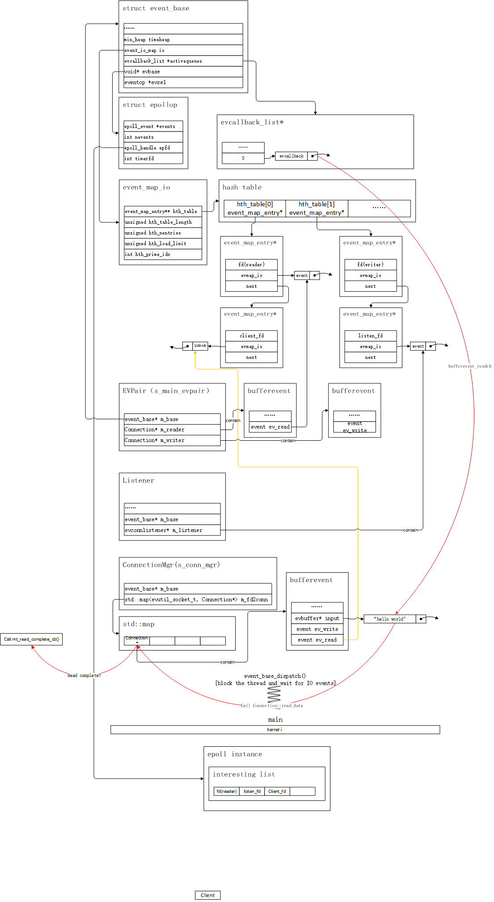图24
main thread在完成了数据包的读取工作之后，会通过属于worker线程的EVPair实例，将数据包广播给他们，worker收到数据包之后，会添加一些自己独有的信息，并且把数据包通过属于main thread的evpair实例，回写给main thread，main thread收到后，会同步给客户端。这里限于篇幅，就不将worker线程的收发数据包流程，通过图文的方式展示，但是，worker线程，向main thread写入数据包的流程，这里需要论述一下，疏通了这个流程，也能理解worker的运作流程。
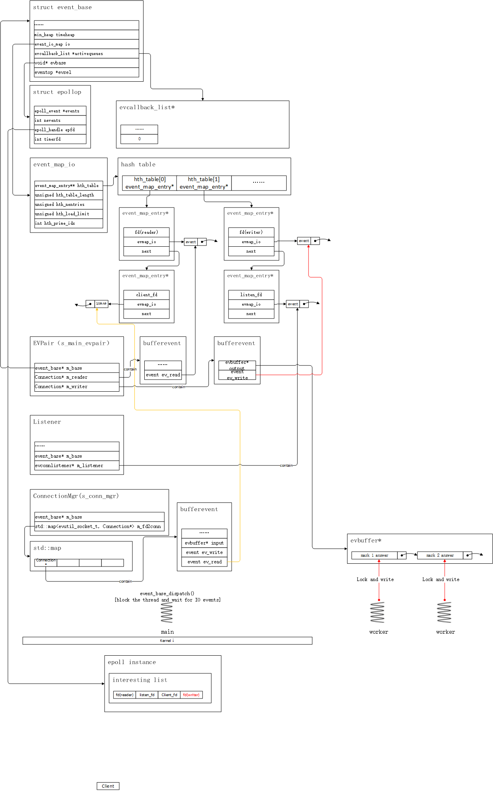图25
从上图中，可以看出，我们的worker线程，通过EVPair::write函数，将数据包写入EVPair实例内部的bufferevent实例的output链表中，evbuffer内部是加了锁的，因此多线程写入是线程安全的。此时我们可以看到，EVPair中的用于处理写事件的bufferevent实例，此时添加了一个event实例到event_io_map中了，并且对应的fd也被添加到了epoll实例中去了。此时，event_base_dispatch会被唤醒，处理写事件，将output链表中的数据，全部写入socket的kernel缓存。这个过程我们就略过。而当数据写完的时候，EVPair中，新添加的ev_write也要被清除，epoll实例中也要清除对应的fd，避免没有数据写入时，epoll_wait被频繁唤醒，空耗性能。worker线程，从另一端写入，那么main thread这边，EVPair实例，负责处理读事件的fd，就会被唤醒。
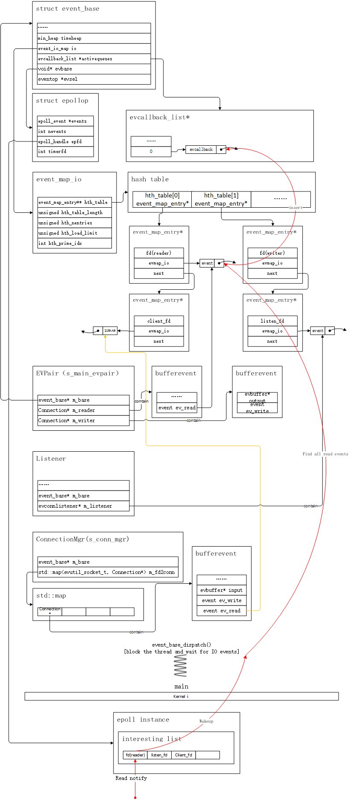图26
和前面讨论的流程一样，最终，event_base_dispatch函数，会逐个调用激活列表中的函数，由于我们的EVPair包含的是Connection实例，而Connection实例内部使用的是bufferevent实例，其读事件注册的回调函数，是内部定义的一个bufferevent_readcb函数，这个函数会被调用，前面也提到过，这个函数会读取socket kernel缓存中的数据，并且在完成组包处理之后，抛给业务层，于是得到图27的结果：
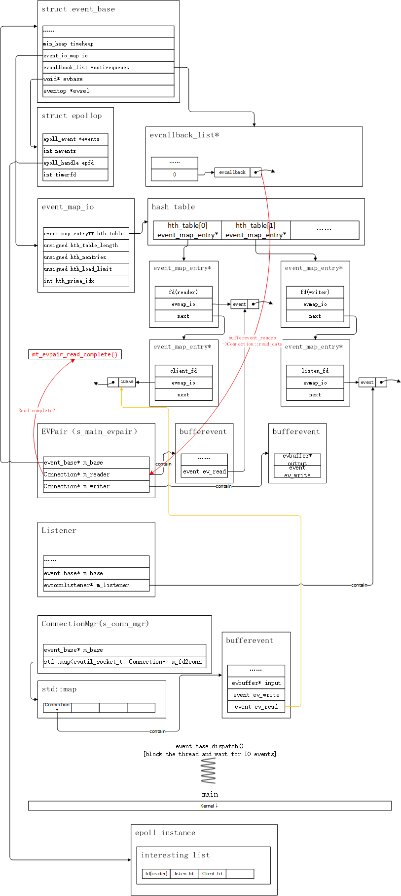图27
EVPair读完整包之后，就会向原来的客户端回写数据，首先会向其bufferevent实例的output链表写入数据：
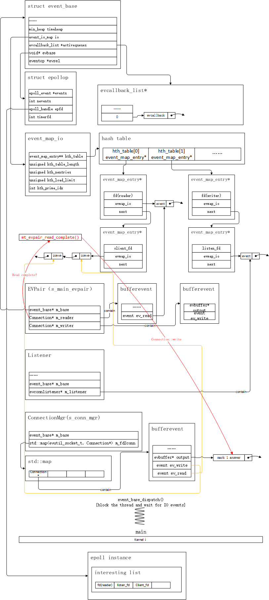图28
现在，我们的client_fd对应的event_map_entry实例里，多添加了一个EV_WRITE类型的event。此时，当kernel层的socket实例，一旦输出缓存为空时，就会唤醒epoll_wait，同时将output buffer中的数据，通过write函数，写入socket实例的kernel层缓冲。最后数据包会输出给客户端，并在控制台打印。
客户端关闭流程
现在，我们进入到最后一个流程，测试客户端关闭时的流程。首先epoll_wait会被再次唤醒，然后执行event_base_dispatch的逻辑，此时，event_base_dispatch会往激活列表中，ev_read实例的event_evcallback实例。在接下来执行这个回调函数时，libevent会尝试去client_fd里读取数据，因为客户端已经关闭，所以会直接调用已经注册好的错误处理函数，在我们的例子中，但凡遇到任何错误，都会关闭连接，于是我们得到图29的结果：
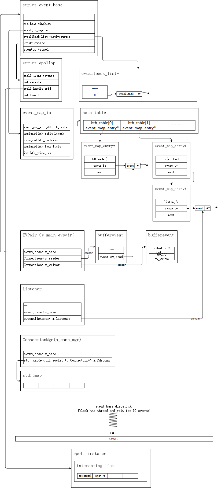图29
我们可以看到，与client_fd相关的事件，内存实例均被清理掉了。到目前为止，我们所有的流程都已经论述完毕。
结束语
本文，我用了最快的速度去编写、审校，论述了libevent最核心的数据结构，以及运作流程。最后通过一个简单的实例，来将其流程，通过图文的方式展现出来，由于时间仓促，没能做到精益求精，但也耗费了我许多时间和精力，希望能够帮助到广大读者XD。
Reference
[1] Binary Heap